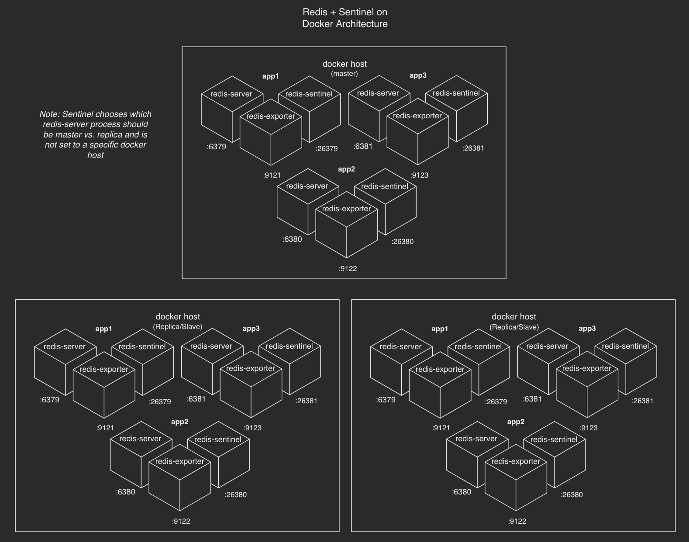

Docker + Ansible
Deploying HA Redis on docker with Ansible
Purpose of each tool
Redis+Sentinel
- HA in-memory key/value (mostly single-threaded) database
Docker
- Containers enable bin packing for Redis and thus gives you more optimal resource utilization
Ansible
- Cluster deployment, orchestration and configuration management
What is Redis?
- Redis (REmote DIctionary Server) is an in-memory, key-value database, commonly referred to as a data structure server.
- Originally written by Salvatore Sanfilippo who needed something faster than MySQL
- Was sponsored by Pivotal until 2015 and now is owned and developed by Redis Labs
- Common use cases
- Session Cache
- Full Page Cache (FPC)
- Queues
- Leaderboards/Counting
- Pub/Sub
What is Sentinel?
- Provides Monitoring, Notification, Automatic Failover, Service Discovery/Configuration Provider
- Apps talk directly to Sentinel, typically with a connect string of comma seperated uris:
redis://116.203.124.77:26379,redis://116.203.124.67:26379,redis://116.203.124.97:26379 - Automatically reconfigures Redis nodes using CONFIG REWRITE when a failure occurs...
But... This is a presentation about orchestrating Docker with Ansible
not Redis...
Ansible Components
- Latest release of Ansible
- modules
- docker_container module (included in Ansible)
- roles
- ansible-role-docker (installs Docker CE - third party role)
- configure_container (configures redis and sentinel containers)
- create_container (pulls docker images and wraps the docker_container module)
- playbooks
- playbook_deploy_redis_containers.yml
- playbook_redis_check.yml
- variables
- stored in group_vars
Container definitions
group_vars
---
- container_name: app1_redis
password: supersecrepassword
container_exposed_ports:
- 6379
container_published_ports:
- 6379:6379
container_volumes:
- /docker/app1_redis:/usr/local/etc/redis
container_networks:
- name: br-redis
- container_name: app2_redis
password: supersecretpassword
container_exposed_ports:
- 6379
container_published_ports:
- 6380:6379
container_volumes:
- /docker/app2_redis:/usr/local/etc/redis
container_networks:
- name: br-redisdocker_container module
Note: docker_container uses either the docker-py or docker Python modules, however docker-py is deprecated---
docker_container:
name: "app2_redis"
image: "docker.io/library/redis:5.0.3"
state: "started"
recreate: "no"
command: "redis-server *:6379"
exposed_ports:
- 6379
published_ports:
- 6380:6379
volumes:
- /docker/app2_redis:/usr/local/etc/redis
sysctls:
net.core.somaxconn: 65535
networks:
- name: br-redis
restart_policy: "unless-stopped"
interactive: yes
tty: yes
Benefits of doing this crazy Ansible thing vs. (insert your favorite container scheduler here)...
- Down right simplicity
- Predictable
- Data persistence/safety of your data
- Scalable
- Repeatable
``.---:::///+++++++oooooossssssssssssssssssssssoooooo+++++++////:::---..`` ./+syyyyyyyyyyyyyyyyyyyyyyyyyyyyyyyyyyyyyyyyyyyyyyyyyyyyyyyyyyyyyyyyyyyyyyyyyyyyso/-` ./syyyyyyyyyyyyyyyyyyyyyyyyyyyyyyyyyyyyyyyyyyyyyyyyyyyyyyyyyyyyyyyyyyyyyyyyyyyyyyyyyyyyy+. `+yyyyyyyyyyyyyyyyyyyyyyyyyyyyyyyyyyyyyyyyyyyyyyyyyyyyyyyyyyyyyyyyyyyyyyyyyyyyyyyyyyyyyyyyyy+` .syyyyyyyyyyyyyyyyyyyyyyyyyyyyyyyyyyyyyyyyyyyyyyyyyyyyyyyyyyyyyyyyyyyyyyyyyyyyyyyyyyyyyyyyyyyyo` oyyyyyyyyyyyyyyyyyyyyyyyyyyyyyyyyyyyyyyyyyyyyyyyyyyyyyyyyyyyyyyyyyyyyyyyyyyyyyyyyyyyyyyyyyyyyyy+ -yyyyyyyyyyyyyyyyyyyyyyyyyyyyyyyyyyyyyyyyyyyyyyyyyyyyyyyyyyyyyyyyyyyyyyyyyyyyyyyyyyyyyyyyyyyyyyyy` +yyyyyyyyyyyyyyyyyyyyyyyyyyyyyyyyyyyyyyyyyyyyyyyyyyyyyyyyyyyyyyyyyyyyyyyyyyyyyyyyyyyyyyyyyyyyyyyy/ syyyyyyyyyyyyyyyyyyyyyyyyyyyyyyyyyyyyyyyyyyyyyyyyyyyyyyyyyyyyyyyyyyyyyyyyyyyyyyyyyyyyyyyyyyyyyyyyo .yyyyyyyyyyyyyyyyyyyyyyyyyyyyyyyyyyyyyyysyyyyyyyyyyyyyyyyyyyyyyyyyyyyyyyyyyyyyyyyyyyyyyyyyyyyyyyyys` -yyyyyyyyyyyyyyyyyyyyyyyyyyyyyyyyyyyyyyy:`:+syyyyyyyyyyyyyyyyyyyyyyyyyyyyyyyyyyyyyyyyyyyyyyyyyyyyyy. :yyyyyyyyyyyyyyyyyyyyyyyyyyyyyyyyyyyyyyy: `-+syyyyyyyyyyyyyyyyyyyyyyyyyyyyyyyyyyyyyyyyyyyyyyyyyyy- +yyyyyyyyyyyyyyyyyyyyyyyyyyyyyyyyyyyyyyy: `-/syyyyyyyyyyyyyyyyyyyyyyyyyyyyyyyyyyyyyyyyyyyyyyyy: +yyyyyyyyyyyyyyyyyyyyyyyyyyyyyyyyyyyyyyy: `./oyyyyyyyyyyyyyyyyyyyyyyyyyyyyyyyyyyyyyyyyyyyyy+ oyyyyyyyyyyyyyyyyyyyyyyyyyyyyyyyyyyyyyyy: `.:osyyyyyyyyyyyyyyyyyyyyyyyyyyyyyyyyyyyyyyyyy+ oyyyyyyyyyyyyyyyyyyyyyyyyyyyyyyyyyyyyyyy: `:+syyyyyyyyyyyyyyyyyyyyyyyyyyyyyyyyyyyyyyo oyyyyyyyyyyyyyyyyyyyyyyyyyyyyyyyyyyyyyyy: `-+syyyyyyyyyyyyyyyyyyyyyyyyyyyyyyyyyyyo oyyyyyyyyyyyyyyyyyyyyyyyyyyyyyyyyyyyyyyy: ./yyyyyyyyyyyyyyyyyyyyyyyyyyyyyyyyyyo oyyyyyyyyyyyyyyyyyyyyyyyyyyyyyyyyyyyyyyy: `-+syyyyyyyyyyyyyyyyyyyyyyyyyyyyyyyyyyyo oyyyyyyyyyyyyyyyyyyyyyyyyyyyyyyyyyyyyyyy: `:+syyyyyyyyyyyyyyyyyyyyyyyyyyyyyyyyyyyyyyo oyyyyyyyyyyyyyyyyyyyyyyyyyyyyyyyyyyyyyyy: `.:osyyyyyyyyyyyyyyyyyyyyyyyyyyyyyyyyyyyyyyyyy+ +yyyyyyyyyyyyyyyyyyyyyyyyyyyyyyyyyyyyyyy: `./oyyyyyyyyyyyyyyyyyyyyyyyyyyyyyyyyyyyyyyyyyyyyy+ +yyyyyyyyyyyyyyyyyyyyyyyyyyyyyyyyyyyyyyy: `-/syyyyyyyyyyyyyyyyyyyyyyyyyyyyyyyyyyyyyyyyyyyyyyyy/ :yyyyyyyyyyyyyyyyyyyyyyyyyyyyyyyyyyyyyyy: `-+syyyyyyyyyyyyyyyyyyyyyyyyyyyyyyyyyyyyyyyyyyyyyyyyyyy- -yyyyyyyyyyyyyyyyyyyyyyyyyyyyyyyyyyyyyyy:`:osyyyyyyyyyyyyyyyyyyyyyyyyyyyyyyyyyyyyyyyyyyyyyyyyyyyyyy. .yyyyyyyyyyyyyyyyyyyyyyyyyyyyyyyyyyyyyyysyyyyyyyyyyyyyyyyyyyyyyyyyyyyyyyyyyyyyyyyyyyyyyyyyyyyyyyyyy` syyyyyyyyyyyyyyyyyyyyyyyyyyyyyyyyyyyyyyyyyyyyyyyyyyyyyyyyyyyyyyyyyyyyyyyyyyyyyyyyyyyyyyyyyyyyyyyyo +yyyyyyyyyyyyyyyyyyyyyyyyyyyyyyyyyyyyyyyyyyyyyyyyyyyyyyyyyyyyyyyyyyyyyyyyyyyyyyyyyyyyyyyyyyyyyyyy/ -yyyyyyyyyyyyyyyyyyyyyyyyyyyyyyyyyyyyyyyyyyyyyyyyyyyyyyyyyyyyyyyyyyyyyyyyyyyyyyyyyyyyyyyyyyyyyyyy. oyyyyyyyyyyyyyyyyyyyyyyyyyyyyyyyyyyyyyyyyyyyyyyyyyyyyyyyyyyyyyyyyyyyyyyyyyyyyyyyyyyyyyyyyyyyyyy+ `syyyyyyyyyyyyyyyyyyyyyyyyyyyyyyyyyyyyyyyyyyyyyyyyyyyyyyyyyyyyyyyyyyyyyyyyyyyyyyyyyyyyyyyyyyyyo` `+yyyyyyyyyyyyyyyyyyyyyyyyyyyyyyyyyyyyyyyyyyyyyyyyyyyyyyyyyyyyyyyyyyyyyyyyyyyyyyyyyyyyyyyyyy/` `/syyyyyyyyyyyyyyyyyyyyyyyyyyyyyyyyyyyyyyyyyyyyyyyyyyyyyyyyyyyyyyyyyyyyyyyyyyyyyyyyyyyys/` .:+syyyyyyyyyyyyyyyyyyyyyyyyyyyyyyyyyyyyyyyyyyyyyyyyyyyyyyyyyyyyyyyyyyyyyyyyyyyys+:. ``.---:::///+++++++oooooossssssssssssssssssssssssooooo++++++++///:::---.``
Ease of day two operations
- Additional container provisioning
- Only newly added containers are deployed = safe and fast deployment
- Monitoring (via prometheus)
- Every container has a dedicated exporter container
- Grafana dashboard
- Health Check
ansible-playbook -i inventory_redis_cluster.yml playbook_redis_check.yml --limit redis_cluster --user root --private-key=~/.ssh/id_rsa - takes about 2 min to run
- The docker daemon takes care of restarting the containers via the
unless-stoppedrestart policy
What this creates

Grafana Dashboard
Redis prometheus exporter metrics and Grafana dashboard are both provided by oliver006Live Demo
- Provision 3 new VMs on Hetzner Cloud
- Update inventory with new IPs
# ansible -i inventory_redis_cluster.yml all -m shell -a uptime --user root --private-key=~/.ssh/id_rsa # ansible-playbook -i inventory_redis_cluster.yml playbook_deploy_redis_containers.yml --limit redis_cluster --user root --private-key=~/.ssh/id_rsa -e "bootstrap_redis_cluster=true" - This will deploy 7 Redis + Sentinel clusters and takes about 12 min to run
``.---:::///+++++++oooooossssssssssssssssssssssoooooo+++++++////:::---..``
./+syyyyyyyyyyyyyyyyyyyyyyyyyyyyyyyyyyyyyyyyyyyyyyyyyyyyyyyyyyyyyyyyyyyyyyyyyyyyso/-`
./syyyyyyyyyyyyyyyyyyyyyyyyyyyyyyyyyyyyyyyyyyyyyyyyyyyyyyyyyyyyyyyyyyyyyyyyyyyyyyyyyyyyy+.
`+yyyyyyyyyyyyyyyyyyyyyyyyyyyyyyyyyyyyyyyyyyyyyyyyyyyyyyyyyyyyyyyyyyyyyyyyyyyyyyyyyyyyyyyyyy+`
.syyyyyyyyyyyyyyyyyyyyyyyyyyyyyyyyyyyyyyyyyyyyyyyyyyyyyyyyyyyyyyyyyyyyyyyyyyyyyyyyyyyyyyyyyyyyo`
oyyyyyyyyyyyyyyyyyyyyyyyyyyyyyyyyyyyyyyyyyyyyyyyyyyyyyyyyyyyyyyyyyyyyyyyyyyyyyyyyyyyyyyyyyyyyyy+
-yyyyyyyyyyyyyyyyyyyyyyyyyyyyyyyyyyyyyyyyyyyyyyyyyyyyyyyyyyyyyyyyyyyyyyyyyyyyyyyyyyyyyyyyyyyyyyyy`
+yyyyyyyyyyyyyyyyyyyyyyyyyyyyyyyyyyyyyyyyyyyyyyyyyyyyyyyyyyyyyyyyyyyyyyyyyyyyyyyyyyyyyyyyyyyyyyyy/
syyyyyyyyyyyyyyyyyyyyyyyyyyyyyyyyyyyyyyyyyyyyyyyyyyyyyyyyyyyyyyyyyyyyyyyyyyyyyyyyyyyyyyyyyyyyyyyyo
.yyyyyyyyyyyyyyyyyyyyyyyyyyyyyyyyyyyyyyysyyyyyyyyyyyyyyyyyyyyyyyyyyyyyyyyyyyyyyyyyyyyyyyyyyyyyyyyys`
-yyyyyyyyyyyyyyyyyyyyyyyyyyyyyyyyyyyyyyy:`:+syyyyyyyyyyyyyyyyyyyyyyyyyyyyyyyyyyyyyyyyyyyyyyyyyyyyyy.
:yyyyyyyyyyyyyyyyyyyyyyyyyyyyyyyyyyyyyyy: `-+syyyyyyyyyyyyyyyyyyyyyyyyyyyyyyyyyyyyyyyyyyyyyyyyyyy-
+yyyyyyyyyyyyyyyyyyyyyyyyyyyyyyyyyyyyyyy: `-/syyyyyyyyyyyyyyyyyyyyyyyyyyyyyyyyyyyyyyyyyyyyyyyy:
+yyyyyyyyyyyyyyyyyyyyyyyyyyyyyyyyyyyyyyy: `./oyyyyyyyyyyyyyyyyyyyyyyyyyyyyyyyyyyyyyyyyyyyyy+
oyyyyyyyyyyyyyyyyyyyyyyyyyyyyyyyyyyyyyyy: `.:osyyyyyyyyyyyyyyyyyyyyyyyyyyyyyyyyyyyyyyyyy+
oyyyyyyyyyyyyyyyyyyyyyyyyyyyyyyyyyyyyyyy: `:+syyyyyyyyyyyyyyyyyyyyyyyyyyyyyyyyyyyyyyo
oyyyyyyyyyyyyyyyyyyyyyyyyyyyyyyyyyyyyyyy: `-+syyyyyyyyyyyyyyyyyyyyyyyyyyyyyyyyyyyo
oyyyyyyyyyyyyyyyyyyyyyyyyyyyyyyyyyyyyyyy: ./yyyyyyyyyyyyyyyyyyyyyyyyyyyyyyyyyyo
oyyyyyyyyyyyyyyyyyyyyyyyyyyyyyyyyyyyyyyy: `-+syyyyyyyyyyyyyyyyyyyyyyyyyyyyyyyyyyyo
oyyyyyyyyyyyyyyyyyyyyyyyyyyyyyyyyyyyyyyy: `:+syyyyyyyyyyyyyyyyyyyyyyyyyyyyyyyyyyyyyyo
oyyyyyyyyyyyyyyyyyyyyyyyyyyyyyyyyyyyyyyy: `.:osyyyyyyyyyyyyyyyyyyyyyyyyyyyyyyyyyyyyyyyyy+
+yyyyyyyyyyyyyyyyyyyyyyyyyyyyyyyyyyyyyyy: `./oyyyyyyyyyyyyyyyyyyyyyyyyyyyyyyyyyyyyyyyyyyyyy+
+yyyyyyyyyyyyyyyyyyyyyyyyyyyyyyyyyyyyyyy: `-/syyyyyyyyyyyyyyyyyyyyyyyyyyyyyyyyyyyyyyyyyyyyyyyy/
:yyyyyyyyyyyyyyyyyyyyyyyyyyyyyyyyyyyyyyy: `-+syyyyyyyyyyyyyyyyyyyyyyyyyyyyyyyyyyyyyyyyyyyyyyyyyyy-
-yyyyyyyyyyyyyyyyyyyyyyyyyyyyyyyyyyyyyyy:`:osyyyyyyyyyyyyyyyyyyyyyyyyyyyyyyyyyyyyyyyyyyyyyyyyyyyyyy.
.yyyyyyyyyyyyyyyyyyyyyyyyyyyyyyyyyyyyyyysyyyyyyyyyyyyyyyyyyyyyyyyyyyyyyyyyyyyyyyyyyyyyyyyyyyyyyyyyy`
syyyyyyyyyyyyyyyyyyyyyyyyyyyyyyyyyyyyyyyyyyyyyyyyyyyyyyyyyyyyyyyyyyyyyyyyyyyyyyyyyyyyyyyyyyyyyyyyo
+yyyyyyyyyyyyyyyyyyyyyyyyyyyyyyyyyyyyyyyyyyyyyyyyyyyyyyyyyyyyyyyyyyyyyyyyyyyyyyyyyyyyyyyyyyyyyyyy/
-yyyyyyyyyyyyyyyyyyyyyyyyyyyyyyyyyyyyyyyyyyyyyyyyyyyyyyyyyyyyyyyyyyyyyyyyyyyyyyyyyyyyyyyyyyyyyyyy.
oyyyyyyyyyyyyyyyyyyyyyyyyyyyyyyyyyyyyyyyyyyyyyyyyyyyyyyyyyyyyyyyyyyyyyyyyyyyyyyyyyyyyyyyyyyyyyy+
`syyyyyyyyyyyyyyyyyyyyyyyyyyyyyyyyyyyyyyyyyyyyyyyyyyyyyyyyyyyyyyyyyyyyyyyyyyyyyyyyyyyyyyyyyyyyo`
`+yyyyyyyyyyyyyyyyyyyyyyyyyyyyyyyyyyyyyyyyyyyyyyyyyyyyyyyyyyyyyyyyyyyyyyyyyyyyyyyyyyyyyyyyyy/`
`/syyyyyyyyyyyyyyyyyyyyyyyyyyyyyyyyyyyyyyyyyyyyyyyyyyyyyyyyyyyyyyyyyyyyyyyyyyyyyyyyyyyys/`
.:+syyyyyyyyyyyyyyyyyyyyyyyyyyyyyyyyyyyyyyyyyyyyyyyyyyyyyyyyyyyyyyyyyyyyyyyyyyyys+:.
``.---:::///+++++++oooooossssssssssssssssssssssssooooo++++++++///:::---.``
This is great, but how could I possibly implement this myself?